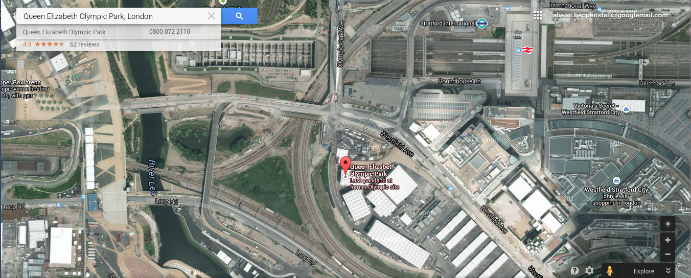

For any map-based resource, timeliness and correctness of data are important considerations. One of the major advantages that web-based maps have over paper-based ones is that they can be updated quickly and cheaply. Whilst paper maps may well be drawn from the same digital boundary information as a web-based resource, there are costly overheads in printing and distributing new versions. In contrast, web-based maps that are dynamically generated will reflect new information as soon as the new data are added to the master database. There are obvious commercial advantages to making new data quickly available, yet there are also significant practical considerations. For example, consider the map databases of satellite navigation systems. These map databases must be kept up to date with new roads, with removal of old roads, and with any changes in restrictions on roads (for example, restrictions on turning right at some junctions). In some cases, the routes of new roads (especially major roads) will be known long in advance, and in these cases it is important to ensure that the road enters the database when it is actually finished, rather than when it is scheduled to be completed - these may not be the same! There is also the potential for finer-grained updating of information: temporary restrictions and road closures can be accommodated on a web-based map in a manner which is impossible for paper-based maps.
NATO's
explanation at the time was that the bombing targets had been
selected from outdated maps supplied to them by the US Central
Intelligence Agency; the intended target had been the Yugoslav Federal
Directorate for Supply and Procurement, which was located nearby.
According to NATO, maps supplied by the CIA pre-dated the
war,
and did not include the Chinese Embassy in it's then location.
This story has since been disputed; a report in the Guardian
in October 1999 claimed that the embassy had been deliberately targeted
because it has been identified as acting as a communications point to
re-broadcast instructions to Yugoslav army units
[http://www.guardian.co.uk/Kosovo/Story/0,2763,203214,00.html].
However, it is clear that map databases are used not just for
simple domestic purposes, but also for military and other purposes, and
that their correctness is of great value. This is perhaps
especially true in an era of 'smart' weapons aimed at specific targets
in urban environments.
Images
taken from:
http://www.cnn.com/WORLD/europe/9905/20/kosovo.03/
Different sources of aerial imagery will of course have differing
levels of timeliness. The figures below show three different views of the 2012
Olympic site in Stratford, East London captured in January 2009. All are based on vector road
data; Figure a shows the area as represented in Google Maps, and
Figure b shows the area as represented in Microsoft's Live Search.
Both of these are similar, and show a large open area, with a number of
roads and rail lines. The view in both services remained
similar a year later, with Microsoft's Live Search re-branded as
part of their Bing search engine.
Figure c, by contrast, is
generated from user supplied content by OpenStreetMap.
A number of rail lines have been removed, the site is
correctly labelled, and the site of the Olympic stadium is marked.

Figure a: 2012 Olympic Site, as shown in
Google Maps, Map view
[19/2/09]
 Figure b: 2012
Olympic Site, as shown in
Figure b: 2012
Olympic Site, as shown in
MS Live Search Maps, Map view
[19/2/09]
 Figure c: 2012
Olympic Site, as shown in
Figure c: 2012
Olympic Site, as shown in
OpenStreetMap[19/2/09]
 Figure d: 2012 Olympic Stadium -
webcam[19/2/09]
Figure d: 2012 Olympic Stadium -
webcam[19/2/09]
The representations of the site in the first two images are quite out-of-date. Do the available aerial images from either provider fare any better? The figures above show a marked contrast in the age of images of used, although both are out of date. Figure a is the aerial image available via Google Maps, and shows the site having been cleared, and with construction of some sort taking place. Figure b is an aerial image from Microsoft Live Search, and clearly pre-dates site clearance, with railway lines and sheds still standing in the area.
Neither image is particularly up-to-date; Figure c is taken from a webcam on the Olympic site, showing progress on construction of the Olympic stadium at the south of the site. Whilst no major building work is shown in either of the preceding images, it is clear from the webcam that the building work has proceeded to a state where the stadium is recognisably 'stadium-like'.
For completion, here is an image of the Olympic Park taken in 2014:

Which of these various sources would you expect to be most timely? Clearly, the webcam will be most current, as it shows real-time images of progress. Would you expect aerial imagery or vector databases to be more advanced? Aerial photography can capture data for large areas in a short time, but such images require post-capture processing, and are costly to carry out. Modifications to vector databases are manually intensive - each vector element must be changed separately - but can be done at short notice. The potential for vector databases to have a high degree of timeliness is demonstrated by the OpenStreetMap database.
A source of inconsistency in the data provided by Google and other providers arises in the aerial photography and remotely sensed data that is made available. There are a variety of ways in which this might be manifested. The high resolution images used for major cities are collected by aerial photography. Clearly, the entire city cannot be covered at the same time, and thus photographs from multiple passes must be stitched together. Look at the figure below, a closeup of skyscrapers in New York City (centred on West 42nd Street and Avenue of the Americas).
Different parts of this composite image have been
drawn from different
aerial photography passes and the buildings appear to lean drunkenly
into each other. A slight variation in the tilt of the
aeroplane
taking images changes the perspective view of the buildings, and with
very tall buildings such optical illusions can be created.
Larger
format images are gathered via remote sensing satellites.
These
satellites typically collect images from a range of angles as the pass
overhead. These images must be ortho-rectified to remove
distortion.
At other times, the inconsistencies can be more subtle. Images of a given location collected at different times but from an identical angle may still have shifts in shadows apparent.
A final comment on the
correctness of data in all major map
databases
is that some of these contain deliberate
errors. These are supposedly introduced in order to spot
attempts
to copy the map database are re-sell it or distrbute it as original
material. A common term given to deliberate errors are 'trap
streets'. The extent to which such errors actually exist is
not
known. For more information about trap streets, and some
examples, see http://wiki.openstreetmap.org/index.php/Copyright_Easter_Eggs
Here is a nice Geeky Easter Egg that Google Maps put together for the 50th Anniversary of Doctor Who